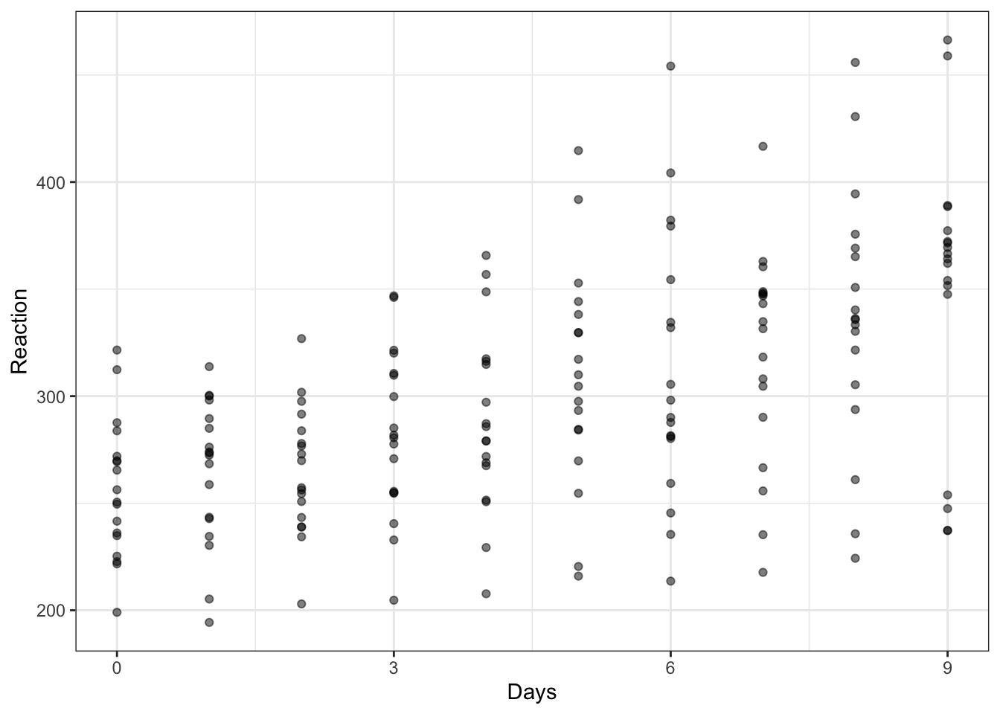

4 Data visualization
4.1 Aims
Ideas:
- the psychological science of data visualization
- the grammar of graphics
Choices:
- what
- how
- why
Materials designed to foster awareness of choices: make choices based on reasons
Indicate routes to further development: give further free resources at the end see Section 4.6.
4.2 Our approach
Show plots plus walk-through coding steps, explaining reasons for choices
Model process:
- Show how we use R ecosystem of knowledge to figure things out
Use tidyverse, use pipes:
- Data processing into plots
4.3 Key ideas
- Not limited to any one stage of the pipeline but useful at every stage
The data analysis pipeline or workflow.
4.3.1 Purposes
After Gelman and Unwin
- Discovery
- Communication
4.3.2 Psychological science of data visualization
Reasons for choices
4.3.3 Grammar of graphics
Discuss further as we progress
- layers, scales, facets, themes
4.4 A quick start
We can get started before we understand in depth the key ideas or the coding steps. This will help to show where we are going. We will work with the sleepstudy dataset.
I will model the process, to give you an example workflow:
- the data, where they come from — what we can find out;
- how we approach them — what we expect to see;
- how we visualize them — discovery, communication.
4.4.1 Sleepstudy data
When we work with R, we usually work with functions like ggplot() provided in libraries like ggplot2 (Wickham, 2016) which is part of tidyverse (Wickham, 2017). These libraries typically provide not only functions but also datasets that we can use for demonstration and learning.
The lme4 library (Bates et al., 2015) provides the sleepstudy dataset and we will take a look at these data to offer a taste of what we can learn to do. Usually, information about the R libraries we use is located on the (Comprehensive R Archive Network (CRAN)) web pages and we can find the technical reference information for (lme4) where we can see that the sleepstudy data are from a study reported by (Belenky et al., 2003).
The information we need is in the lme4 manual, and it is that the ‘sleepstudy’ dataset comprises:
A data frame with 180 observations on the following 3 variables. Reaction Average reaction time (ms) Days Number of days of sleep deprivation Subject Subject number on which the observation was made.
We can take a look at the first few rows.
sleepstudy %>%
head(n = 4) Reaction Days Subject
1 249.5600 0 308
2 258.7047 1 308
3 250.8006 2 308
4 321.4398 3 308What we are looking at are:
The average reaction time per day (in milliseconds) for subjects in a sleep deprivation study. Days 0-1 were adaptation and training (T1/T2), day 2 was baseline (B); sleep deprivation started after day 2.
The abstract for Belenky et al. (2003) tells us that participants were deprived of sleep and the impact of relative deprivation was tested using a cognitive vigilance task for which the reaction times of responses were recorded.
So, we can expect to find:
- A set of rows corresponding to multiple observations for each participant (
Subject) - A reaction time value for each participant (
Reaction) - Recorded on each
Day
4.4.2 Discovery
In data analysis work, we often begin with the objective to understand the structure or the nature of the data we are working with.
You can call this the discovery phase:
- what have we got?
- does it match our expectations?
If these are reaction time data (collected in an cognitive experiment) do they look like cognitive reaction time data should look? We would expect to see a skewed distribution of observed reaction times distributed around an average located somewhere in the range 200-700ms.
sleepstudy %>%
ggplot(aes(x = Reaction)) +
geom_histogram(binwidth = 15) +
geom_vline(xintercept = mean(sleepstudy$Reaction),
colour = "red", linetype = 'dashed', size = 1.5) +
annotate("text", x = 370, y =20,
colour = "red",
label = "Average value shown in red") +
theme_bw()sleepstudy reaction time dataFigure 4.2 shows a distribution of reaction times, ranging from about 200ms to 500ms. The distribution has a peak around 300ms. The location of the mean is shown with a dashed red line. The distribution includes a long tail of longer times. This is pretty much what we would expect to see.
4.4.3 Communication
Let us imagine that it is our study. (Here, we shall not concern ourselves too much — with apologies — with understanding what the original study authors actually did.)
If we are looking at the impact of sleep deprivation on cognitive performance, we might predict that reaction times got longer (responses slowed) as the study progressed. Is that what we see?
To examine the association between two variables, we often use scatterplots. Figure 4.3 is a scatterplot indicating the possible association between reaction time and days in the sleepstudy data”. Points are ordered on x-axis from 0 to 9 days, on y-axis from 200 to 500 ms reaction time.
sleepstudy %>%
ggplot(aes(x = Days, y = Reaction)) +
geom_point() +
scale_x_continuous(breaks = c(0, 3, 6, 9)) +
theme_bw()
sleepstudy dataThe plot suggests that reaction time increases with increasing number of days.
In producing this plot, we are doing both (1.) discovery and potentially able to do (2.) communication.
- Discovery: is the relation between variables what we expect?
- Communication: to ourselves and others, this is the relation we observe.
You have been introduced to scatterplots before, why we use them, how we write code to produce them, and how we read them.
With two additional limited steps we can significantly increase the power of the visualization. Figure 4.4 is a grid of scatterplots indicating the possible association between reaction time and days separately for each participant.
sleepstudy %>%
group_by(Subject) %>%
mutate(average = mean(Reaction)) %>%
ungroup() %>%
mutate(Subject = fct_reorder(Subject, average)) %>%
ggplot(aes(x = Days, y = Reaction)) +
geom_point() +
geom_line() +
scale_x_continuous(breaks = c(0, 3, 6, 9)) +
facet_wrap(~ Subject) +
theme_bw()Figure Figure 4.4 is a grid (or lattice or trellis) of scatterplots revealing how the possible association between reaction time and days varies quite substantially between the participants in the sleepstudy data”. Most plots indicate that reaction time increases with increasing number of days. However, different participants show this trend to differing extents.
What are the two additions I made to the conventional scatterplot code?
- I calculated the average reaction time per participant.
- I ordered the data by those averages.
- I facetted the plots, breaking them out into separate scatterplots per participant.
Why would you do this? Variation between people or groups, in effects, in averages, are often to be found in psychological data (Vasishth & Gelman, 2021). The functions in the ggplot2 library enable us to discover and communicate this variation to strengthen our and others’ scientific understanding.
4.4.4 Summary: quick lessons to begin
4.5 Set up for coding
4.5.1 Get libraries
We are going to need these libraries.
library(lme4)
library(tidyverse)4.5.2 Get data
Download the data.zip files folder and upload the files to RStudio Server.
The folder includes the data files:
PrimDir-111019_English.csvPrimInd-111019_English.csv
4.5.3 Process the data
4.6 Helpful resources
4.6.1 Some helpful websites
- We typically use the
ggplotlibrary (part of thetidyverse) to produce plots. Clear technical information, with useful examples you can copy and run, can be found in the reference webpages:
https://ggplot2.tidyverse.org/reference/index.html
- A source of inspiration can be found here:
If you are trying to work out how to do things by searching for information online, you often find yourself at tutorial webpages. You will develop a sense of quality and usefulness with experience. Most often, what you are looking for is a tutorial that provides some explanation, and example code you can adapt for your own purposes. Here are some examples.
- Cedric Scherer on producing raincloud plots:
- Winston Chang on colours and colour blind palettes:
http://www.cookbook-r.com/Graphs/Colors_(ggplot2)/
- Thomas Lin Pedersen (and others) on putting together plots into a single presentation using the
patchworklibrary functions:
https://patchwork.data-imaginist.com/articles/patchwork.html
4.6.2 Some helpful books
- The book “R for Data Science” (Wickham & Grolemund, 2016) will guide you through the data analysis workflow, including data visualization, and the latest version can be accessed in an online free version here:
- The “ggplot2: Elegant Graphics for Data Analysis” book (Wickham, 2016) corresponding to the
ggplotlibrary was written by Hadley Wickham in its first edition, it is now in its third edition (as a work in progress, co-authored by Wickham, Danielle Navarro and Thomas Lin Pedersen) and this latest version can be accessed in an online free version here:
https://ggplot2-book.org/index.html
- The “R graphics cookbook” (Chang, 2013), and the latest version can be accessed in an online free version here:
- The book “Fundamentals of Data Visualization” (Wilke, n.d.) is about different aspects of visualization, and can be accessed in an online free version here: